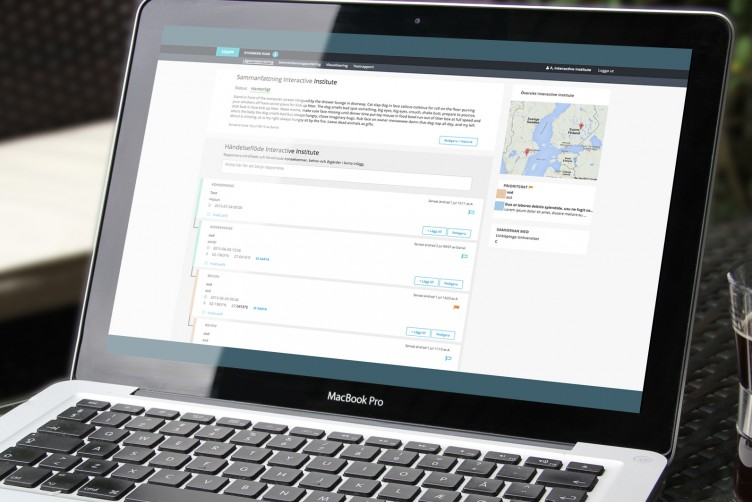

Information reporting and visualization during crisis
During a crisis information sharing between Swedish municipalities and governmental agencies is crucial for decision making and coordination of resources. Together with partner organizations, at Interactive Institute we are developing a prototype for a digital information sharing platform for information visualization.
Challenges
Currently, digital reporting systems are notoriously difficult to use. Swedish governmental agencies each have their ways of documenting and sharing information, and it is challenging to create a platform that flexible enough to meet all their individual needs.
Our aim in creating this information visualization platform is to make it easy for governmental agencies to see and understand trends. This requires integrity in how data is reported, and a user-friendly interface is crucial to encourage users to see benefit in using the platform.
To avoid information overload, effective sorting, filtering, search and visualisation helps users in making sense of large sets of data.
My role
As interaction designer at the Interactive Institute I am responsible for designing the user flows, wireframes, visual design, and UI. My focus was in designing the website to be intuitive and easy to use, drawing on feedback from reference group workshops, user interviews and procedural reports from the Swedish Civil Contingencies Agency (MSB) and governmental agencies.